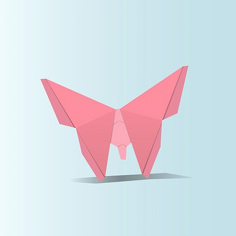
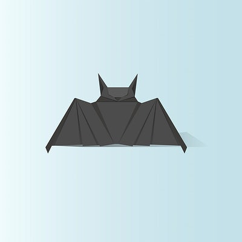
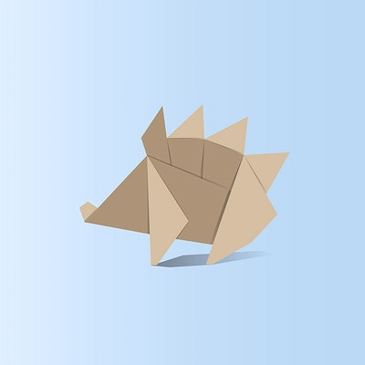
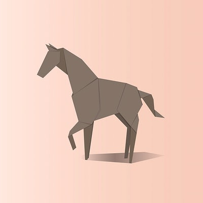
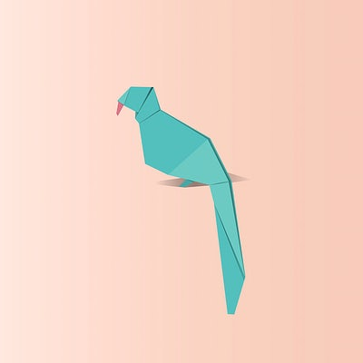
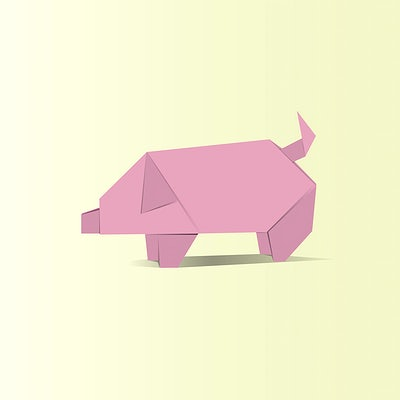

Origami Designs
About Us
Follow Us

Butterflies and moths are part of the same group of insects, known as 'Lepidoptera'.
The lifecycle of a butterfly is in four stages: egg, caterpillar, pupa and adult butterfly.
Butterflies have four wings, not two as you may think.

Bats can eat up to 1,200 mosquitoes an hour.
Bats can find their food in total darkness.
Baby bats are called pups.
 Bears care deeply about family members and grieve deeply for others.
Some species of Asiatic bear build nests in the trees.
Bears have excellent senses of smell, sight and hearing.
Bears care deeply about family members and grieve deeply for others.
Some species of Asiatic bear build nests in the trees.
Bears have excellent senses of smell, sight and hearing.
Elephants ferment grapes in their trunks to make wine.
Elephants cannot get intoxicated due to their large size.
The calves of elephants can stand and walk within 20 minutes of birth.

Hedgehogs are lactose intolerant, so milk should never be left out for them.
Hedgehogs have a long snout to help them hunt their staple diet of insects, worms, caterpillers and berries.
Hedgehogs have around 5000 to 7000 spines on their back.

Horses have a nearly 360 degree field of vision.
Horses have 10 different muscles in their ears.
Horses are “obligate nose breathers” meaning that they can only breathe through their nose.

Parrots are smart. Parrots learn well, and they learn fast.
Parrots can imitate sounds, this makes Parrots popular pets.
Parrots are one of the most intelligent bird species.
A group of penguins in the water is called a raft but on land they're called a waddle.
The black and white “tuxedo” look donned by most penguin species is a clever camouflage called countershading.
Only one species, the Galápagos penguin, is found north of the Equator.

Pigs are more intelligent than dogs, some primates and even some young children.
When they're not either squealing or talking, pigs will eat almost anything even human bones.
Pigs have an excellent sense of direction and also very good memories.
Rats control their body temperature by expanding and contracting the blood vessels in their tails.
In addition to wood, rats can also gnaw through lead, cinder blocks and aluminum sheeting.
A temple dedicated to Hindu goddess Karni Mata in northwest India is home to more than 15,000 rats.
Black rhinos have a 'prehensile', meaning hooked, lip for pulling leaves off branches.
Rhinos do have thick skin, but they can still get sun burnt.
Both black and white rhinos have two horns but can be differentiated based on the shaped mouth.
Snails can have lungs or gills depending on the species and their habitat.
Some species of snails hibernate during the colder months of the year.
When they feel threatened, they usually retreat into their shell to protect themselves.
 Sperm whales are the largest of all toothed whales and can grow to a maximum length of 52 feet.
They have the largest brain of any creature known to have lived on Earth.
Because sperm whales spend most of their time in deep waters, their diet consists of species such as squid, sharks, and fish
Sperm whales are the largest of all toothed whales and can grow to a maximum length of 52 feet.
They have the largest brain of any creature known to have lived on Earth.
Because sperm whales spend most of their time in deep waters, their diet consists of species such as squid, sharks, and fish
Whales can hold their breaths for at least 20 minutes.
The blue whale is the largest known creature to ever inhabit the planet.
Whales are a widely distributed and diverse group of fully aquatic placental marine mammals.